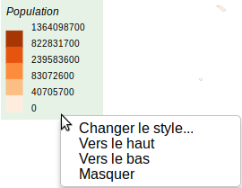

Habillage de la carte
Magrit propose une série d'éléments nécessaires à l'habillage de la carte :

Différentes couches géographiques permettant de contextualiser les données représentées :
- Tracé des pays du monde
- Tracé des limites administratives à différents échelons infra-nationaux (Europe, USA, Brésil)
- ...

- Graticule
- Dessin de l'emprise du globe
Des couches géographiques d'habillage peuvent être ajoutée par l'utilisateur :
- Ces couches peuvent être ajoutées par le gestionnaire de couches
- Ces couches servent seulement à l'habillage de la carte et ne peuvent pas être utilisées avec les différents types de représentations proposées (elles peuvent toutefois faire l'objet d'un mise en forme de base: choix d'une couleur unique de remplissage, choix d'une couleur unique de bordure, réglage de l'opacité et de l'épaisseur de la bordure)
D'autres éléments peuvent être ajoutés, ils sont déplacables au curseur et paramétrables via un clic droit :
- Flèche d'orientation
- Échelle
- Zone de texte
- Ellipse
- Rectangle
- Flèche personnalisable
- Symbole (pictogramme ou image - les formats png, jpg et svg sont supportés)


Les légendes peuvent aussi être modifiées avec le double-clic.

Les options "Vers le haut" et "Vers le bas" des menus contextuels des éléments d'habillage permettent de gérer leur ordre d'affichage les uns par rapport aux autres ainsi que les éventuelles superpositions (de manière similaire aux fonctionnalités "Monter" et "Descendre" applicables à des objets dans Inkscape).